你好，我是郭伟静 ✨
我具备全栈技术视野与快速落地能力，熟练掌握Python数据分析与爬虫、Vue前端开发、AI智能体与算法模型搭建、Unity游戏开发及AE/C4D数字媒体制作。
从深圳信息职业技术学院到广州新华学院，持续深耕数字媒体技术领域，积累了AI应用开发、前端工程、算法模型、数据分析、数字媒体制作、游戏开发等多维度项目经验。曾获2023-2024年度"中国大学生自强之星"、国家奖学金、金砖国家职业技能大赛国际金奖、全国一等奖，连续三年专业成绩第一。技术于我而言，是连接创意与落地的桥梁。
项目 经历
从工业智能诊断到AI美妆应用，每个项目都是技术与创意的深度融合。
融合多智能体的航天发动机轴承故障诊断与可视化平台
AI开发工程师 · 2025.09 - 2026.04- 创建多智能体架构，设计5大智能体角色与JSON标准化通信协议
- 独立开发8个自定义插件（数据处理、混淆矩阵/ROC/PR可视化、数据切片、图像云存储）
- 基于哈工大航发轴承数据集完成MSCNN-LSTM模型端到端训练，实现轴承故障三分类（准确率>90%）
- 搭建知识库，采用BM25+知识图谱混合检索生成标准化维护建议
- 打通"数据清洗→智能诊断→知识检索→可视化报告→钉钉推送"全流程闭环
基于Coze平台的美妆AI应用开发
AI应用开发工程师 · 2025.03 - 2025.06- 设计并实现6大AI功能模块（皮肤检测、智能美颜、妆容分析、面部特征推荐、星座运势妆容、AI对话助手）
- 独立开发5个自定义插件调用旷视Face++API实现人脸/皮肤/美颜全链路处理
- 构建6条Coze工作流集成大模型实现"上传→分析→推荐→展示"闭环
- 首创"星座运势+美妆推荐"跨界融合，结合天气数据动态调整护肤方案
- 完成移动端UI界面设计与事件绑定，实现完整的用户交互体验
"帮帮忙"APP界面设计项目
UI设计师 · 2025.03 - 2025.05- 独立完成校园互助类APP全流程UI设计，从需求分析到低保真原型输出
- 设计核心功能页面：引导页、登录/注册页、首页轮播图、任务广场、发布订单、消息中心、个人中心、订单管理等
- 梳理用户操作流程：注册登录→浏览任务→发布/接单→在线沟通→支付结算→评价反馈
- 输出完整低保真原型图，标注页面跳转逻辑与交互说明
工业互联网集成应用（全国职业院校技能大赛）
参赛选手 · 2024.05 - 2024.06- 获全国职业院校技能大赛工业互联网集成应用赛项二等奖
- 深入制造业产线调研，梳理生产计划、物料管理、质量检测等业务流程
- 开发MES核心功能模块：生产工单管理、设备状态监控、质量数据采集与追溯
- SQL多表关联设计数据库（工单-设备-物料-质量记录），支持复杂查询与统计报表生成
- 通过工业协议对接PLC/网关，实现设备数据实时采集，接入系统进行可视化展示
RPA京东商品数据采集系统
RPA工程师 · 2023.05 - 2023.06- 使用来也RPA搭建自动化流程，实现京东商品信息自动抓取（名称/价格/销量/评价/店铺/促销信息）
- 梳理数据采集全流程：登录→搜索→筛选→遍历列表→抓取详情→存储
- Python+Pandas清洗数据，格式化价格、提取销量数字、异常值检测
- 输出多Sheet标准化Excel报表（含透视表/图表）
- 效率提升10倍+，单次抓取500+商品，准确率98%，用于竞品分析、价格监控、选品决策
Shopify主题定制电商开发
前端开发工程师 · 2024.10 - 2025.03- 使用Liquid语言定制Shopify主题，熟悉Dawn架构，编写section和schema配置
- 开发动态购物车、多条件筛选、B2B批发价展示等核心功能模块
- 优化页面性能：用render替代include，合理做缓存，提升首屏加载速度
- 用React + Hydrogen搭建无头电商站点，配合Storefront API实现购物车、用户登录、实时库存查询
- 实现订阅管理和个性化推荐功能，提升用户转化率和复购率
微信小程序图书购买系统
前端工程师 · 2024.10 - 2025.03- 使用微信小程序原生框架（WXML/WXSS/JavaScript）开发完整购书流程
- 实现图书分类浏览、关键词搜索、多条件筛选、详情展示等功能
- 开发购物车模块：添加/删除商品、数量调整、批量结算、价格实时计算
- 订单管理：订单生成、状态跟踪（待付款/待发货/待收货/已完成）、物流信息展示
- 个人中心：收货地址管理、订单历史查询、收藏夹功能
校园 经历
从班级团支书到学院团委副书记，锻炼组织协调与团队管理能力。
中德教学实践项目 · 学生负责人
学生负责人 · 2023.05 - 2023.08- 学院与德国合作院校开展的工业4.0教学实践项目，选派优秀学生赴德学习智能制造课程并参访企业
- 作为学生负责人，统筹20人团队的行前培训、行程协调与安全管理
- 对接德方安排课程学习与技术参访，组织每日例会解决突发问题
- 撰写总结报告并协助对外联络，确保项目顺利推进
中德机器人学院团委 · 学院团委副书记
学生干部 · 2022.11 - 2023.11- 协助团委书记开展团组织工作，管理组织部并合理分工
- 带领团队开展主题团日活动，负责青马班建设
- 组织暑期社会实践，发掘培养骨干，提升团队整体素质
班级团支书 · 班委
学生干部 · 2021.09 - 2024.06- 负责班级团支部建设，组织团员学习政治理论；发展新团员，开展评优评先
- 策划执行团日活动，沟通协调校团委与班级
- 带领班级获广东省主题团日活动千入围、五四红旗团支部等荣誉
学院勤工助学 · 办公室助理负责人
学生助理 · 2021.10 - 2023.06- 负责管理办公室文件，做好收发、整理与归档
- 组织学生相关活动，从策划到执行全流程跟进
- 收集并整理学生反馈，及时与老师沟通搭建有效桥梁
- 协助老师处理临时任务，灵活应对不同需求
精选 作品
左右滑动浏览我的作品集，包含APP交互设计、Web前端开发、游戏开发、AE特效制作与AI生成作品等项目。
"帮帮忙"APP
校园互助类APP全流程UI设计，从需求分析到低保真原型输出
Motel a Miio 品牌网页设计
为葡萄牙手工陶瓷品牌"Motel a Miio"设计的多页面品牌官网，包含首页火焰特效动画、品牌理念展示、产品范围介绍、3D模型杯具购物、用户注册登录及反馈表单等完整功能模块。
2D炸弹人休闲游戏
使用Unity Tilemap系统构建关卡地图，C#脚本实现角色移动、炸弹放置与爆炸范围计算，敌人采用简单AI巡逻与追踪逻辑，UI系统包含开始菜单、角色选择、游戏HUD及结束界面。
MG动画：狗狗的一天
运用矢量插画与MG动画技术，生动展现可爱狗狗的日常生活
3D环绕动态海报
霓虹发光3D文字环绕动画，赛博朋克风格动态海报模板设计
中华文字之美
传统文化与现代视觉特效结合，展现汉字的艺术魅力
AI生成数字艺术
使用AI绘画工具创作的多幅数字艺术作品合集
荣誉 奖项
国家级奖项6项、省部级奖项10余项，专业成绩第一。
中国青年报报道荣誉列表
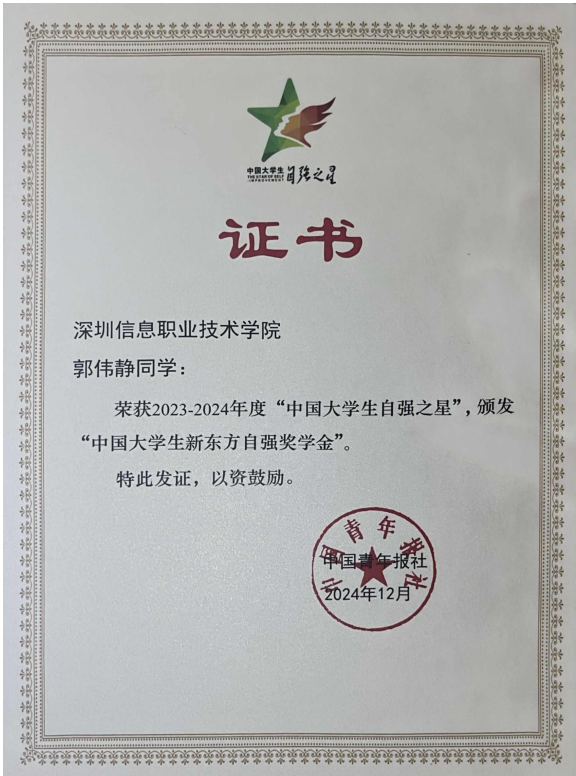
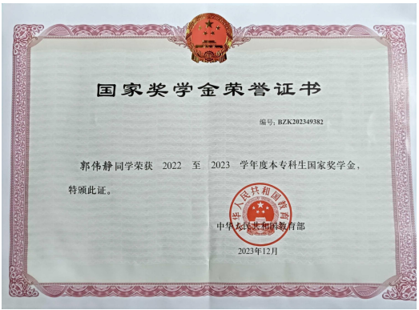
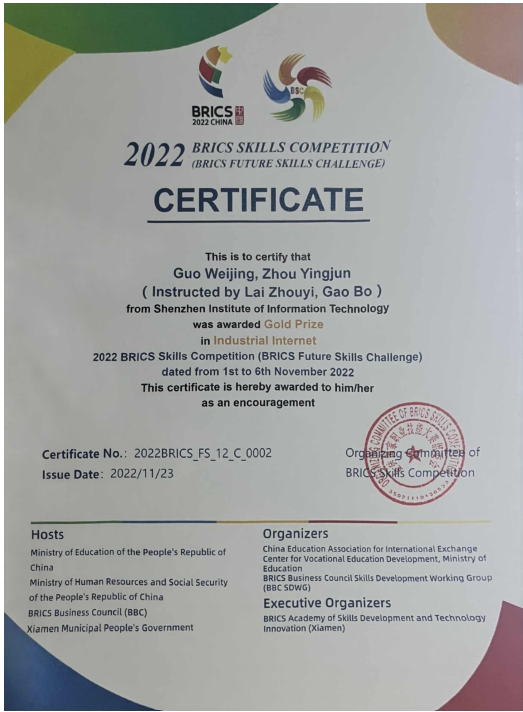
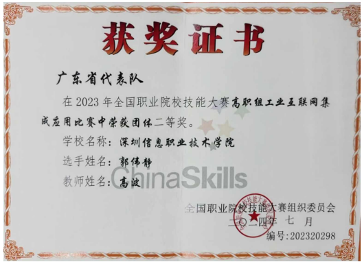
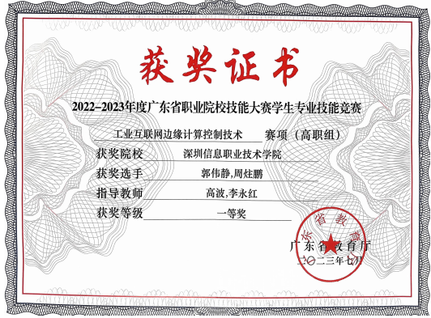
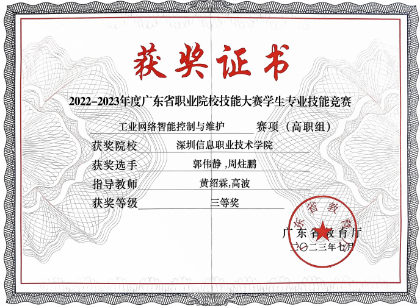
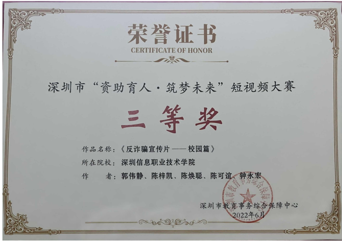
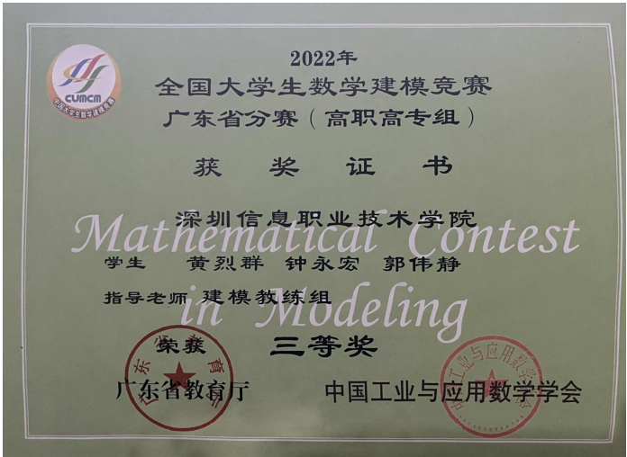
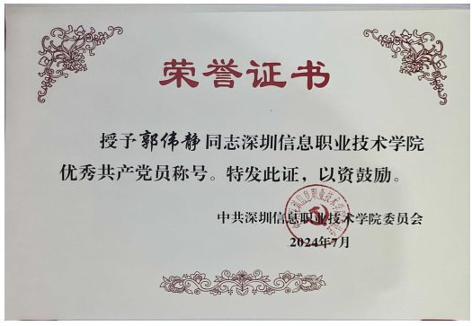
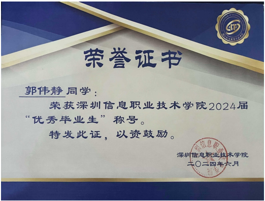
技术 技能树
点击分支节点展开/收起技能详情，悬停查看熟练度动态变化。
专业认证
RPA中级工程师
自动化流程认证
1+X工业互联网运维工程师
职业技能等级证书
德国技术员
中德合作认证
学业 成绩
历年学业成绩优异，专业排名前列，多门核心课程满绩。
深圳信息职业技术学院
中德机器人学院 · 工业互联网技术（3年制）
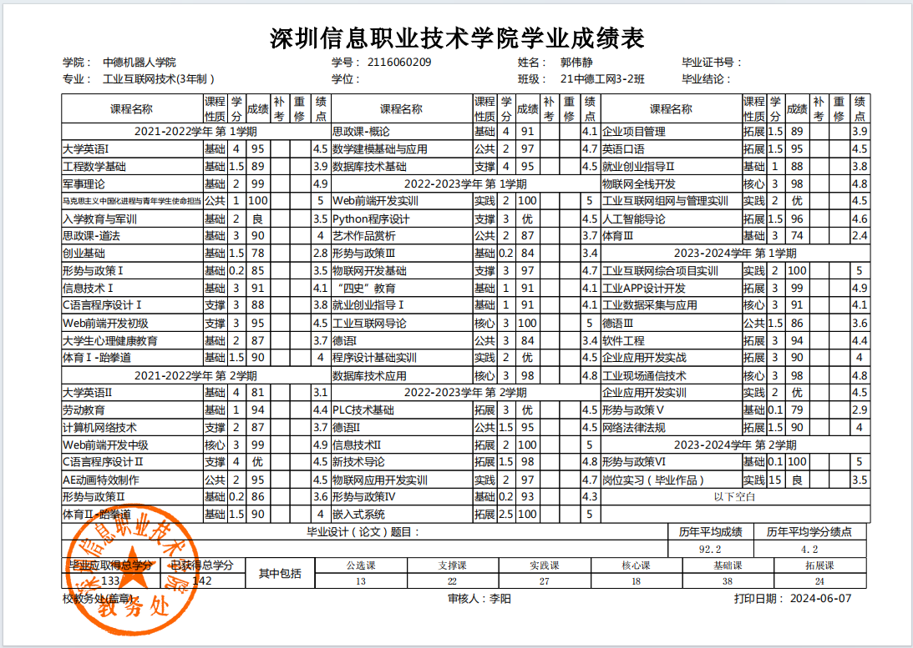
高分课程亮点
广州新华学院
信息与智能工程学院 · 数字媒体技术专业（全日制本科）
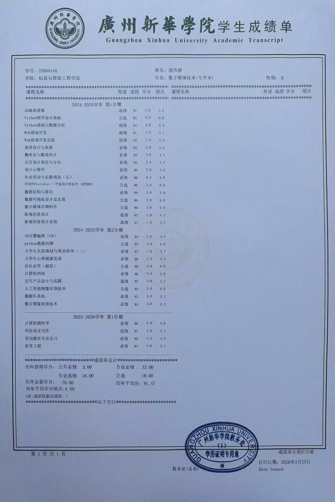
高分课程亮点
论文 研究方向
聚焦航天发动机轴承故障智能诊断领域，融合多智能体协同与深度学习技术，构建"诊断-可视化-知识检索"一体化平台。
融合多智能体的航天发动机轴承故障诊断
针对航天发动机轴承故障诊断的复杂性与高可靠性要求，设计5大智能体协同架构：数据处理智能体（航天质量工程师人设，含数据质量ABC三级评定）、故障诊断智能体（首席适航专家人设，输出置信度与风险评估）、知识检索智能体（航天标准库管理员人设，引用GJB/QJ标准号）、可视化智能体（可靠性数据分析师人设，展示MTBF与置信区间）、调度智能体（飞行安全调度员人设，适航性判定）。各智能体通过JSON标准化通信协议传递数据，实现全流程闭环。
MSCNN-LSTM深度学习模型
基于哈工大航发轴承公开数据集，构建MSCNN-LSTM混合深度学习模型。MSCNN（多尺度卷积神经网络）提取轴承振动信号的多频域特征，LSTM（长短期记忆网络）捕捉时序依赖关系，实现轴承故障的三分类诊断（正常/内圈故障/外圈故障）。模型端到端训练，测试集准确率>90%，混淆矩阵、ROC曲线、PR曲线等多维度评估指标验证模型鲁棒性。
诊断结果可视化与可靠性分析
独立开发8个自定义可视化插件：混淆矩阵热力图、ROC曲线、PR曲线、数据切片分析、特征重要性图、时序波形图、频谱分析图、诊断报告自动生成。可视化结果包含可靠性指标（MTBF、置信区间、安全等级标识Ⅰ-Ⅳ级）。支持图像云存储与钉钉消息推送，实现"模型推理→结果可视化→报告生成→消息推送"全链路自动化。
知识图谱与标准化维护建议
构建航天发动机轴承故障知识图谱，整合GJB（国军标）、QJ（航天工业标准）及企业标准。采用BM25+知识图谱混合检索技术，根据诊断结果自动匹配故障模式、根因分析、维护方案与安全等级。生成结构化维护建议报告，包含标准号引用、适航性影响评估、备件更换周期、检修工时估算，实现"智能诊断→知识检索→精准维护"的预测性维护闭环。
期待 加入
2026届应届生,寻求 AI应用开发 / 算法工程师 / 前端开发 / 图形处理 / 游戏设计开发 /视频特效制作/ 工业互联网 相关岗位，期待以技术驱动创新，与贵司共同成长。
2026届应届毕业生 · 数字媒体技术专业